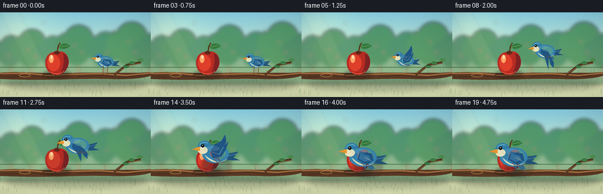
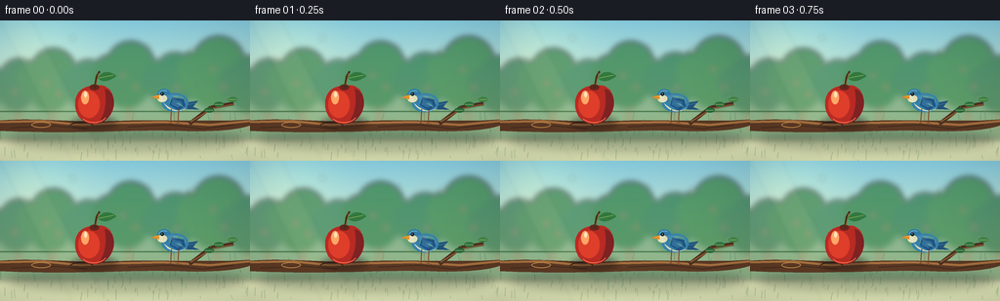

CODING AGENTS AS PIXEL WORLD MODELS
traex/GPT-5.6-Sol · dynamic_spatial_relationship_0040
点击播放 · 原生 RGB 像素
逐轮保存的候选
回放视频、检查图与代码变化。
每份候选均可单独播放。实际图片检查记录在下方工具轨迹中。
候选 01播放与检查图
点击播放 · 原生 RGB 像素


展开代码变化
--- 上一保存版本
+++ 本次保存版本
@@ -0,0 +1,353 @@
+from pathlib import Path
+import math
+import numpy as np
+from PIL import Image, ImageDraw, ImageFilter
+import artifact_io
+
+W, H, N = 256, 144, 20
+SS = 4
+SW, SH = W * SS, H * SS
+ROOT = Path(__file__).resolve().parent
+
+
+def sc(v):
+ return int(round(v * SS))
+
+
+def box(b):
+ return tuple(sc(v) for v in b)
+
+
+def pts(seq):
+ return [(sc(x), sc(y)) for x, y in seq]
+
+
+def smoothstep(x):
+ x = max(0.0, min(1.0, x))
+ return x * x * (3.0 - 2.0 * x)
+
+
+def cubic(p0, p1, p2, p3, steps=14):
+ out = []
+ for i in range(steps + 1):
+ t = i / steps
+ u = 1 - t
+ out.append((
+ u**3*p0[0] + 3*u*u*t*p1[0] + 3*u*t*t*p2[0] + t**3*p3[0],
+ u**3*p0[1] + 3*u*u*t*p1[1] + 3*u*t*t*p2[1] + t**3*p3[1]
+ ))
+ return out
+
+
+def closed_bezier(segments, steps=12):
+ out = []
+ for a, b, c, d in segments:
+ out.extend(cubic(a, b, c, d, steps)[:-1])
+ return out
+
+
+def alpha_layer(base, painter, blur=0):
+ lay = Image.new('RGBA', base.size, (0, 0, 0, 0))
+ painter(ImageDraw.Draw(lay), lay)
+ if blur:
+ lay = lay.filter(ImageFilter.GaussianBlur(sc(blur)))
+ return Image.alpha_composite(base.convert('RGBA'), lay)
+
+
+def make_background(frame):
+ # Gentle sky/grass gradient with a warm upper-left glow.
+ y = np.arange(SH, dtype=np.float32)[:, None]
+ x = np.arange(SW, dtype=np.float32)[None, :]
+ sky_top = np.array([135, 205, 225], np.float32)
+ sky_low = np.array([236, 239, 191], np.float32)
+ q = np.clip(y / sc(105), 0, 1)[..., None]
+ arr = sky_top[None, None, :] * (1-q) + sky_low[None, None, :] * q
+ arr = np.broadcast_to(arr, (SH, SW, 3)).copy()
+ glow = np.exp(-(((x-sc(36))/sc(54))**2 + ((y-sc(22))/sc(42))**2))[..., None]
+ arr += glow * np.array([27, 21, 5], np.float32)
+ # Tiny deterministic painterly grain prevents sterile flat fields.
+ rng = np.random.default_rng(774)
+ grain = rng.normal(0, 0.8, (SH, SW, 1))
+ arr = np.clip(arr + grain, 0, 255).astype(np.uint8)
+ im = Image.fromarray(arr, 'RGB').convert('RGBA')
+
+ # Soft distant orchard.
+ distant = Image.new('RGBA', (SW, SH), (0, 0, 0, 0))
+ d = ImageDraw.Draw(distant)
+ hill = [(0, 82), (22, 69), (53, 72), (82, 60), (114, 70), (147, 58),
+ (180, 68), (216, 57), (256, 67), (256, 122), (0, 122)]
+ d.polygon(pts(hill), fill=(87, 145, 105, 150))
+ # Tree trunks and canopies at several depths.
+ for tx, ty, r, col in [
+ (18,67,25,(58,125,85,185)), (53,62,30,(70,139,87,200)),
+ (89,67,24,(53,128,84,185)), (132,57,32,(59,134,82,205)),
+ (178,64,28,(45,123,79,190)), (222,55,35,(63,137,81,205)),
+ (255,66,27,(48,120,76,190))]:
+ d.rounded_rectangle(box((tx-2, ty+13, tx+3, 111)), radius=sc(2), fill=(83,85,55,115))
+ for ox, oy, rr in [(-.55,-.05,.64),(.05,-.35,.76),(.58,.02,.59),(-.08,.32,.72)]:
+ d.ellipse(box((tx+(ox-rr)*r, ty+(oy-rr)*r,
+ tx+(ox+rr)*r, ty+(oy+rr)*r)), fill=col)
+ # Distant red fruit dots.
+ for fx, fy in [(47,64),(60,75),(126,56),(139,68),(218,50),(229,68),(15,73),(181,69)]:
+ d.ellipse(box((fx-1.5,fy-1.5,fx+1.5,fy+1.5)), fill=(195,71,49,115))
+ distant = distant.filter(ImageFilter.GaussianBlur(sc(3.0)))
+ im = Image.alpha_composite(im, distant)
+
+ # Meadow floor.
+ floor = Image.new('RGBA', (SW, SH), (0,0,0,0))
+ fd = ImageDraw.Draw(floor)
+ fd.rectangle(box((0,93,256,144)), fill=(72,129,74,255))
+ for iy in range(sc(94), SH):
+ yy = iy / SS
+ a = int(25 * (yy-94)/50)
+ fd.line([(0,iy),(SW,iy)], fill=(33,77,53,a))
+ # Repeating fine grass, with almost imperceptible breeze.
+ sway = math.sin(frame * .32) * .7
+ rng = np.random.default_rng(118)
+ for _ in range(125):
+ gx = float(rng.uniform(0,256)); gy = float(rng.uniform(101,145)); gh = float(rng.uniform(2,10))
+ col = (42,101+int(rng.uniform(0,25)),57,int(rng.uniform(60,130)))
+ fd.line(pts([(gx,gy),(gx+sway+rng.uniform(-1.5,1.5),gy-gh)]), fill=col, width=sc(.55))
+ floor = floor.filter(ImageFilter.GaussianBlur(sc(.35)))
+ im = Image.alpha_composite(im, floor)
+
+ # Atmospheric bokeh and sun shafts.
+ atmos = Image.new('RGBA', (SW,SH), (0,0,0,0)); ad = ImageDraw.Draw(atmos)
+ ad.polygon(pts([(0,0),(32,0),(108,144),(74,144)]), fill=(255,245,184,14))
+ for bx,by,br,aa in [(25,37,6,26),(74,18,3,34),(197,31,5,18),(235,80,4,20),(152,26,2,30)]:
+ ad.ellipse(box((bx-br,by-br,bx+br,by+br)), fill=(255,252,212,aa))
+ atmos = atmos.filter(ImageFilter.GaussianBlur(sc(2)))
+ return Image.alpha_composite(im, atmos)
+
+
+def draw_branch(im, frame):
+ # Branch shadow on meadow.
+ sh = Image.new('RGBA', im.size, (0,0,0,0)); sd=ImageDraw.Draw(sh)
+ sd.ellipse(box((8,111,250,134)), fill=(25,50,37,75)); sh=sh.filter(ImageFilter.GaussianBlur(sc(5)))
+ im = Image.alpha_composite(im, sh)
+ d = ImageDraw.Draw(im)
+ branch_shape = closed_bezier([
+ ((-8,103),(41,99),(72,105),(118,103)),
+ ((118,103),(164,101),(211,105),(264,101)),
+ ((264,101),(261,112),(220,115),(177,113)),
+ ((177,113),(125,112),(78,117),(-8,113)),
+ ((-8,113),(-11,109),(-10,106),(-8,103)),
+ ], 18)
+ d.polygon(pts(branch_shape), fill=(91,57,36,255))
+ # Warm upper ridge and bark striations.
+ d.line(pts([(0,104),(43,103),(83,107),(122,105),(167,104),(215,107),(256,103)]),
+ fill=(164,111,62,255), width=sc(2.4), joint='curve')
+ d.line(pts([(11,110),(54,108),(89,111)]), fill=(60,40,31,150), width=sc(1))
+ d.line(pts([(131,109),(174,107),(207,111),(239,107)]), fill=(59,39,29,135), width=sc(1))
+ d.ellipse(box((32,104,52,110)), outline=(187,130,70,150), width=sc(1))
+ d.arc(box((71,104,96,113)), 190, 345, fill=(51,35,28,130), width=sc(1))
+ # A fork behind the original perch.
+ d.line(pts([(194,106),(216,89),(239,85)]), fill=(74,48,32,255), width=sc(4))
+ d.line(pts([(195,104),(218,90),(239,86)]), fill=(144,91,49,235), width=sc(1.2))
+ # Leaves on fork, subtly animated.
+ sway = math.sin(frame*.35)*1.0
+ for lx,ly,ang,col in [(224,86,-18,(44,112,63,255)),(238,81,25,(61,132,71,255)),(214,92,35,(38,102,58,240))]:
+ rr=5
+ d.ellipse(box((lx-rr+sway,ly-2.6,lx+rr+sway,ly+2.6)), fill=col)
+ d.line(pts([(lx-4+sway,ly),(lx+4+sway,ly)]), fill=(178,188,107,150), width=sc(.5))
+ return im
+
+
+def draw_apple(im):
+ # Soft contact shadow beneath apple.
+ sh=Image.new('RGBA',im.size,(0,0,0,0)); sd=ImageDraw.Draw(sh)
+ sd.ellipse(box((73,98,120,112)), fill=(35,24,20,105)); sh=sh.filter(ImageFilter.GaussianBlur(sc(3)))
+ im=Image.alpha_composite(im,sh)
+ d=ImageDraw.Draw(im)
+ apple = closed_bezier([
+ ((97,68),(105,63),(115,70),(116,80)),
+ ((116,80),(119,91),(111,104),(99,106)),
+ ((99,106),(86,107),(77,99),(77,86)),
+ ((77,86),(76,73),(87,65),(97,68)),
+ ], 18)
+ d.polygon(pts(apple), fill=(183,43,35,255))
+ # Dim right edge, warm center and reflected lower light.
+ shade = closed_bezier([
+ ((107,70),(116,72),(119,84),(114,94)),((114,94),(111,101),(105,105),(100,106)),
+ ((100,106),(108,95),(110,84),(107,70))
+ ],12)
+ d.polygon(pts(shade), fill=(127,34,35,140))
+ d.ellipse(box((80,72,102,100)), fill=(222,62,42,120))
+ d.ellipse(box((83,72,91,86)), fill=(255,166,103,170))
+ d.ellipse(box((86,73,89,79)), fill=(255,228,189,225))
+ d.arc(box((83,89,109,105)), 20, 150, fill=(245,102,67,115), width=sc(1))
+ # Top dimple, stem and leaf.
+ d.ellipse(box((91.5,65.5,101.5,71.5)), fill=(103,37,29,170))
+ d.line(pts([(97,69),(99,57),(102,52)]), fill=(70,44,25,255), width=sc(2.3))
+ d.line(pts([(98,66),(101,54)]), fill=(158,102,47,210), width=sc(.7))
+ leaf = closed_bezier([
+ ((100,59),(105,50),(114,52),(119,57)),
+ ((119,57),(111,63),(105,64),(100,59))
+ ],12)
+ d.polygon(pts(leaf), fill=(50,120,62,255))
+ d.line(pts([(101,59),(116,56)]), fill=(150,182,96,210), width=sc(.7))
+ return im
+
+
+def local_poly(cx,cy,s,angle, coordinates):
+ ca,sa=math.cos(angle),math.sin(angle)
+ out=[]
+ for x,y in coordinates:
+ out.append((cx+s*(x*ca-y*sa), cy+s*(x*sa+y*ca)))
+ return out
+
+
+def local_box(cx,cy,s,coordinates):
+ # Only used unrotated for soft highlights.
+ x0,y0,x1,y1=coordinates
+ return (cx+s*x0,cy+s*y0,cx+s*x1,cy+s*y1)
+
+
+def draw_bird(base, cx, cy, scale, progress, frame, moving):
+ # All bird geometry is on its own high-res transparent layer.
+ lay=Image.new('RGBA',base.size,(0,0,0,0)); d=ImageDraw.Draw(lay)
+ tilt = (-0.10*math.sin(math.pi*progress)) if moving else 0.0
+ ca,sa=math.cos(tilt),math.sin(tilt)
+ def P(x,y): return (cx+scale*(x*ca-y*sa),cy+scale*(x*sa+y*ca))
+ def PP(seq): return pts([P(x,y) for x,y in seq])
+
+ # Motion streaks, only in the fast middle section.
+ speed = math.sin(math.pi*progress)**2 if moving else 0
+ if speed > .18:
+ for off,aa,wid in [(8,35,1.2),(15,23,.8),(22,14,.6)]:
+ yoff = (off%3-1)*4
+ d.line(pts([(cx+scale*20+off,cy+yoff),(cx+scale*34+off,cy+yoff+1)]),
+ fill=(91,156,188,int(aa*speed)), width=max(1,sc(wid)))
+
+ # Far wing goes behind body.
+ if moving:
+ flap=math.sin(2*math.pi*(progress*2.35+.08))
+ if progress>.84:
+ flap = flap*(1-smoothstep((progress-.84)/.16)) - .15*smoothstep((progress-.84)/.16)
+ if flap >= 0:
+ far=[(-2,-3),(7,-15),(14,-24),(15,-15),(11,-7),(15,-11),(10,0),(3,5)]
+ else:
+ far=[(-4,-1),(8,6),(16,17),(10,18),(4,12),(4,18),(-3,10),(-8,3)]
+ d.polygon(PP(far), fill=(44,101,143,220))
+ else:
+ flap=0
+
+ # Tail feathers.
+ d.polygon(PP([(11,2),(31,-1),(24,7),(33,11),(10,10)]), fill=(33,83,123,255))
+ d.line(PP([(13,5),(29,2)]), fill=(97,157,183,210), width=max(1,sc(scale*.7)))
+ d.line(PP([(13,7),(29,9)]), fill=(24,64,102,220), width=max(1,sc(scale*.55)))
+
+ # Body shape, blue back plus creamy underside.
+ d.ellipse(box(local_box(cx,cy,scale,(-18,-11,18,14))), fill=(54,130,172,255))
+ belly=closed_bezier([
+ (P(-15,2),P(-7,9),P(3,17),P(16,8)),
+ (P(16,8),P(10,14),P(-7,17),P(-15,2))
+ ],10)
+ d.polygon(pts(belly), fill=(222,223,186,255))
+ d.ellipse(box(local_box(cx,cy,scale,(-7,-8,14,9))), fill=(77,153,187,120))
+
+ # Head and cheek.
+ hx,hy=P(-14,-7)
+ d.ellipse(box((hx-scale*10,hy-scale*10,hx+scale*9,hy+scale*9)), fill=(49,124,168,255))
+ d.ellipse(box((hx-scale*9.5,hy-scale*2,hx+scale*3.5,hy+scale*8)), fill=(228,226,187,255))
+ d.ellipse(box((hx-scale*8,hy-scale*.5,hx-scale*3,hy+scale*4.7)), fill=(244,237,202,225))
+ # Crown accent.
+ d.arc(box((hx-scale*8,hy-scale*8,hx+scale*7,hy+scale*5)), 200, 305,
+ fill=(114,185,204,230), width=max(1,sc(scale*1.0)))
+
+ # Near wing: large changing silhouette in flight, closed teardrop when perched/final.
+ fold = (not moving) or progress>.93
+ if fold:
+ wing=[(-4,-6),(12,-3),(14,6),(5,12),(-7,5)]
+ elif flap >= 0:
+ lift=10+15*flap
+ wing=[(-6,-4),(0,-12),(9,-lift),(13,-lift-8),(15,-lift+1),(11,-9),
+ (18,-15),(14,-4),(8,5),(-4,7)]
+ else:
+ drop=9+17*(-flap)
+ wing=[(-7,-3),(5,1),(14,drop-2),(13,drop+7),(8,drop+1),(5,11),
+ (3,drop+10),(-2,12),(-9,3)]
+ d.polygon(PP(wing), fill=(31,84,132,255))
+ # Wing inner patch and three feather seams.
+ if fold:
+ d.polygon(PP([(-3,-3),(8,0),(10,5),(3,8),(-5,4)]), fill=(50,112,154,255))
+ for k in range(3):
+ d.line(PP([(1+k*2,2),(7+k*2,5+k)]),fill=(117,174,192,170),width=max(1,sc(.55*scale)))
+ else:
+ d.line(PP([(-4,-1),(5,2),(11,7 if flap<0 else -8)]),fill=(108,170,192,170),width=max(1,sc(.8*scale)))
+ d.line(PP([(0,1),(8,6 if flap<0 else -12)]),fill=(18,64,110,145),width=max(1,sc(.55*scale)))
+
+ # Beak faces the apple/left.
+ bx,by=P(-23,-6)
+ d.polygon(pts([P(-21,-9),P(-32,-5.5),P(-21,-3)]), fill=(235,153,48,255))
+ d.line(pts([P(-30,-5.5),P(-21,-5)]), fill=(147,76,29,220), width=max(1,sc(.45*scale)))
+ # Eye with catchlight.
+ ex,ey=P(-17,-10)
+ d.ellipse(box((ex-scale*2.25,ey-scale*2.25,ex+scale*2.25,ey+scale*2.25)), fill=(20,26,26,255))
+ d.ellipse(box((ex-scale*.8,ey-scale*1.1,ex+scale*.2,ey-scale*.1)), fill=(255,255,236,255))
+
+ # Legs: planted initially, tucked rearward in flight.
+ if not moving or progress < .03:
+ for lx in (-5,5):
+ x0,y0=P(lx,10)
+ d.line(pts([(x0,y0),(x0-1*scale,105)]),fill=(118,73,39,255),width=max(1,sc(scale*1.15)))
+ d.line(pts([(x0-1*scale,105),(x0-4*scale,106)]),fill=(91,56,34,255),width=max(1,sc(scale*.65)))
+ d.line(pts([(x0-1*scale,105),(x0+3*scale,106)]),fill=(91,56,34,255),width=max(1,sc(scale*.65)))
+ else:
+ for lx in (-2,4):
+ d.line(PP([(lx,9),(lx+4,13),(lx+8,12)]), fill=(106,67,39,220), width=max(1,sc(scale*.8)))
+
+ # Soft upper highlight follows the rounded plumage.
+ hi=Image.new('RGBA',base.size,(0,0,0,0)); hd=ImageDraw.Draw(hi)
+ hd.ellipse(box((cx-scale*15,cy-scale*10,cx+scale*6,cy-scale*2)),fill=(196,228,224,35))
+ hi=hi.filter(ImageFilter.GaussianBlur(sc(1.1)))
+ lay=Image.alpha_composite(lay,hi)
+ return Image.alpha_composite(base,lay)
+
+
+def render(i):
+ u=i/(N-1)
+ # First second establishes the bird to the right; then a smooth forward arc.
+ p=smoothstep((u-.19)/.66)
+ moving = p>0.001
+ if not moving:
+ cx=179 + math.sin(i*.8)*.35
+ cy=83 + math.sin(i*.9)*.25
+ scale=.77
+ else:
+ # Horizontal approach plus an airborne arch. Growth is the main depth cue.
+ cx=179*(1-p)+104*p
+ cy=83*(1-p)+79*p - 22*math.sin(math.pi*p)
+ scale=.77*(1-p)+1.30*p
+ base=make_background(i)
+ base=draw_branch(base,i)
+ base=draw_apple(base)
+
+ # As the bird nears the camera it casts a soft shadow directly across the apple,
+ # reinforcing that it has moved in front rather than merely beside it.
+ if p>.48:
+ q=smoothstep((p-.48)/.52)
+ sh=Image.new('RGBA',base.size,(0,0,0,0)); sd=ImageDraw.Draw(sh)
+ sd.ellipse(box((77+11*q,70+6*q,122+16*q,110+6*q)), fill=(22,39,44,int(64*q)))
+ sh=sh.filter(ImageFilter.GaussianBlur(sc(5-2*q)))
+ base=Image.alpha_composite(base,sh)
+
+ base=draw_bird(base,cx,cy,scale,p,i,moving)
+
+ # A restrained vignette makes the foreground subjects read instantly.
+ arr=np.asarray(base.convert('RGB')).astype(np.float32)
+ yy,xx=np.mgrid[0:SH,0:SW]
+ dx=(xx-SW*.50)/(SW*.72); dy=(yy-SH*.50)/(SH*.80)
+ vig=np.clip(1-.14*np.maximum(0,dx*dx+dy*dy-.15),.84,1.0)[...,None]
+ arr=np.clip(arr*vig,0,255).astype(np.uint8)
+ out=Image.fromarray(arr,'RGB').resize((W,H),Image.Resampling.LANCZOS)
+ return np.asarray(out,dtype=np.uint8)
+
+
+def main():
+ frames=np.stack([render(i) for i in range(N)],axis=0)
+ artifact_io.save(frames,ROOT)
+ print('saved',frames.shape,frames.dtype,'range',int(frames.min()),int(frames.max()))
+
+if __name__=='__main__':
+ main()
可观测工具轨迹
实际执行的命令与返回图片。
命令 1exit 0
/bin/bash -lc "cat prompt.txt && printf '\\n--- GENERATION_RULES.md ---\\n' && cat GENERATION_RULES.md && printf '\\n--- task_spec.json ---\\n' && cat task_spec.json"
命令 2exit 1
/bin/bash -lc "find . -maxdepth 3 -type f -printf '%p\\n' | sort && printf '\\n--- tools ---\\n' && command -v ffmpeg && command -v ffprobe && command -v python3 && python3 - <<'PY' mods=['PIL','numpy','cv2','cairo','moviepy'] for m in mods: try: x=__import__(m); print(m,'OK',getattr(x,'__version__','')) except Exception as e: print(m,'NO',type(e).__name__,str(e)[:100]) PY"
命令 3exit 0
/bin/bash -lc 'cat artifact_io.py'
命令 4exit 0
/bin/bash -lc 'find /usr/share/fonts/truetype -type f 2>/dev/null | head -30'
命令 5exit 0
/bin/bash -lc "for c in ffmpeg ffprobe python3 convert magick; do printf '%s: ' \""'$c"; command -v "$c" || true; done python3 - <<'"'PY' mods=['PIL','numpy','cv2','cairo','moviepy','imageio'] for m in mods: try: x=__import__(m); print(m,'OK',getattr(x,'__version__','')) except Exception as e: print(m,'NO',type(e).__name__,str(e)[:100]) PY"
命令 6exit 0
/bin/bash -lc "cat > generate.py <<'PY'
from pathlib import Path
import math
import numpy as np
from PIL import Image, ImageDraw, ImageFilter
import artifact_io
W, H, N = 256, 144, 20
SS = 4
SW, SH = W * SS, H * SS
ROOT = Path(__file__).resolve().parent
def sc(v):
return int(round(v * SS))
def box(b):
return tuple(sc(v) for v in b)
def pts(seq):
return [(sc(x), sc(y)) for x, y in seq]
def smoothstep(x):
x = max(0.0, min(1.0, x))
return x * x * (3.0 - 2.0 * x)
def cubic(p0, p1, p2, p3, steps=14):
out = []
for i in range(steps + 1):
t = i / steps
u = 1 - t
out.append((
u**3*p0[0] + 3*u*u*t*p1[0] + 3*u*t*t*p2[0] + t**3*p3[0],
u**3*p0[1] + 3*u*u*t*p1[1] + 3*u*t*t*p2[1] + t**3*p3[1]
))
return out
def closed_bezier(segments, steps=12):
out = []
for a, b, c, d in segments:
out.extend(cubic(a, b, c, d, steps)[:-1])
return out
def alpha_layer(base, painter, blur=0):
lay = Image.new('RGBA', base.size, (0, 0, 0, 0))
painter(ImageDraw.Draw(lay), lay)
if blur:
lay = lay.filter(ImageFilter.GaussianBlur(sc(blur)))
return Image.alpha_composite(base.convert('RGBA'), lay)
def make_background(frame):
# Gentle sky/grass gradient with a warm upper-left glow.
y = np.arange(SH, dtype=np.float32)[:, None]
x = np.arange(SW, dtype=np.float32)[None, :]
sky_top = np.array([135, 205, 225], np.float32)
sky_low = np.array([236, 239, 191], np.float32)
q = np.clip(y / sc(105), 0, 1)[..., None]
arr = sky_top[None, None, :] * (1-q) + sky_low[None, None, :] * q
arr = np.broadcast_to(arr, (SH, SW, 3)).copy()
glow = np.exp(-(((x-sc(36))/sc(54))**2 + ((y-sc(22))/sc(42))**2))[..., None]
arr += glow * np.array([27, 21, 5], np.float32)
# Tiny deterministic painterly grain prevents sterile flat fields.
rng = np.random.default_rng(774)
grain = rng.normal(0, 0.8, (SH, SW, 1))
arr = np.clip(arr + grain, 0, 255).astype(np.uint8)
im = Image.fromarray(arr, 'RGB').convert('RGBA')
# Soft distant orchard.
distant = Image.new('RGBA', (SW, SH), (0, 0, 0, 0))
d = ImageDraw.Draw(distant)
hill = [(0, 82), (22, 69), (53, 72), (82, 60), (114, 70), (147, 58),
(180, 68), (216, 57), (256, 67), (256, 122), (0, 122)]
d.polygon(pts(hill), fill=(87, 145, 105, 150))
# Tree trunks and canopies at several depths.
for tx, ty, r, col in [
(18,67,25,(58,125,85,185)), (53,62,30,(70,139,87,200)),
(89,67,24,(53,128,84,185)), (132,57,32,(59,134,82,205)),
(178,64,28,(45,123,79,190)), (222,55,35,(63,137,81,205)),
(255,66,27,(48,120,76,190))]:
d.rounded_rectangle(box((tx-2, ty+13, tx+3, 111)), radius=sc(2), fill=(83,85,55,115))
for ox, oy, rr in [(-.55,-.05,.64),(.05,-.35,.76),(.58,.02,.59),(-.08,.32,.72)]:
d.ellipse(box((tx+(ox-rr)*r, ty+(oy-rr)*r,
tx+(ox+rr)*r, ty+(oy+rr)*r)), fill=col)
# Distant red fruit dots.
for fx, fy in [(47,64),(60,75),(126,56),(139,68),(218,50),(229,68),(15,73),(181,69)]:
d.ellipse(box((fx-1.5,fy-1.5,fx+1.5,fy+1.5)), fill=(195,71,49,115))
distant = distant.filter(ImageFilter.GaussianBlur(sc(3.0)))
im = Image.alpha_composite(im, distant)
# Meadow floor.
floor = Image.new('RGBA', (SW, SH), (0,0,0,0))
fd = ImageDraw.Draw(floor)
fd.rectangle(box((0,93,256,144)), fill=(72,129,74,255))
for iy in range(sc(94), SH):
yy = iy / SS
a = int(25 * (yy-94)/50)
fd.line([(0,iy),(SW,iy)], fill=(33,77,53,a))
# Repeating fine grass, with almost imperceptible breeze.
sway = math.sin(frame * .32) * .7
rng = np.random.default_rng(118)
for _ in range(125):
gx = float(rng.uniform(0,256)); gy = float(rng.uniform(101,145)); gh = float(rng.uniform(2,10))
col = (42,101+int(rng.uniform(0,25)),57,int(rng.uniform(60,130)))
fd.line(pts([(gx,gy),(gx+sway+rng.uniform(-1.5,1.5),gy-gh)]), fill=col, width=sc(.55))
floor = floor.filter(ImageFilter.GaussianBlur(sc(.35)))
im = Image.alpha_composite(im, floor)
# Atmospheric bokeh and sun shafts.
atmos = Image.new('RGBA', (SW,SH), (0,0,0,0)); ad = ImageDraw.Draw(atmos)
ad.polygon(pts([(0,0),(32,0),(108,144),(74,144)]), fill=(255,245,184,14))
for bx,by,br,aa in [(25,37,6,26),(74,18,3,34),(197,31,5,18),(235,80,4,20),(152,26,2,30)]:
ad.ellipse(box((bx-br,by-br,bx+br,by+br)), fill=(255,252,212,aa))
atmos = atmos.filter(ImageFilter.GaussianBlur(sc(2)))
return Image.alpha_composite(im, atmos)
def draw_branch(im, frame):
# Branch shadow on meadow.
sh = Image.new('RGBA', im.size, (0,0,0,0)); sd=ImageDraw.Draw(sh)
sd.ellipse(box((8,111,250,134)), fill=(25,50,37,75)); sh=sh.filter(ImageFilter.GaussianBlur(sc(5)))
im = Image.alpha_composite(im, sh)
d = ImageDraw.Draw(im)
branch_shape = closed_bezier([
((-8,103),(41,99),(72,105),(118,103)),
((118,103),(164,101),(211,105),(264,101)),
((264,101),(261,112),(220,115),(177,113)),
((177,113),(125,112),(78,117),(-8,113)),
((-8,113),(-11,109),(-10,106),(-8,103)),
], 18)
d.polygon(pts(branch_shape), fill=(91,57,36,255))
# Warm upper ridge and bark striations.
d.line(pts([(0,104),(43,103),(83,107),(122,105),(167,104),(215,107),(256,103)]),
fill=(164,111,62,255), width=sc(2.4), joint='curve')
d.line(pts([(11,110),(54,108),(89,111)]), fill=(60,40,31,150), width=sc(1))
d.line(pts([(131,109),(174,107),(207,111),(239,107)]), fill=(59,39,29,135), width=sc(1))
d.ellipse(box((32,104,52,110)), outline=(187,130,70,150), width=sc(1))
d.arc(box((71,104,96,113)), 190, 345, fill=(51,35,28,130), width=sc(1))
# A fork behind the original perch.
d.line(pts([(194,106),(216,89),(239,85)]), fill=(74,48,32,255), width=sc(4))
d.line(pts([(195,104),(218,90),(239,86)]), fill=(144,91,49,235), width=sc(1.2))
# Leaves on fork, subtly animated.
sway = math.sin(frame*.35)*1.0
for lx,ly,ang,col in [(224,86,-18,(44,112,63,255)),(238,81,25,(61,132,71,255)),(214,92,35,(38,102,58,240))]:
rr=5
d.ellipse(box((lx-rr+sway,ly-2.6,lx+rr+sway,ly+2.6)), fill=col)
d.line(pts([(lx-4+sway,ly),(lx+4+sway,ly)]), fill=(178,188,107,150), width=sc(.5))
return im
def draw_apple(im):
# Soft contact shadow beneath apple.
sh=Image.new('RGBA',im.size,(0,0,0,0)); sd=ImageDraw.Draw(sh)
sd.ellipse(box((73,98,120,112)), fill=(35,24,20,105)); sh=sh.filter(ImageFilter.GaussianBlur(sc(3)))
im=Image.alpha_composite(im,sh)
d=ImageDraw.Draw(im)
apple = closed_bezier([
((97,68),(105,63),(115,70),(116,80)),
((116,80),(119,91),(111,104),(99,106)),
((99,106),(86,107),(77,99),(77,86)),
((77,86),(76,73),(87,65),(97,68)),
], 18)
d.polygon(pts(apple), fill=(183,43,35,255))
# Dim right edge, warm center and reflected lower light.
shade = closed_bezier([
((107,70),(116,72),(119,84),(114,94)),((114,94),(111,101),(105,105),(100,106)),
((100,106),(108,95),(110,84),(107,70))
],12)
d.polygon(pts(shade), fill=(127,34,35,140))
d.ellipse(box((80,72,102,100)), fill=(222,62,42,120))
d.ellipse(box((83,72,91,86)), fill=(255,166,103,170))
d.ellipse(box((86,73,89,79)), fill=(255,228,189,225))
d.arc(box((83,89,109,105)), 20, 150, fill=(245,102,67,115), width=sc(1))
# Top dimple, stem and leaf.
d.ellipse(box((91.5,65.5,101.5,71.5)), fill=(103,37,29,170))
d.line(pts([(97,69),(99,57),(102,52)]), fill=(70,44,25,255), width=sc(2.3))
d.line(pts([(98,66),(101,54)]), fill=(158,102,47,210), width=sc(.7))
leaf = closed_bezier([
((100,59),(105,50),(114,52),(119,57)),
((119,57),(111,63),(105,64),(100,59))
],12)
d.polygon(pts(leaf), fill=(50,120,62,255))
d.line(pts([(101,59),(116,56)]), fill=(150,182,96,210), width=sc(.7))
return im
def local_poly(cx,cy,s,angle, coordinates):
ca,sa=math.cos(angle),math.sin(angle)
out=[]
for x,y in coordinates:
out.append((cx+s*(x*ca-y*sa), cy+s*(x*sa+y*ca)))
return out
def local_box(cx,cy,s,coordinates):
# Only used unrotated for soft highlights.
x0,y0,x1,y1=coordinates
return (cx+s*x0,cy+s*y0,cx+s*x1,cy+s*y1)
def draw_bird(base, cx, cy, scale, progress, frame, moving):
# All bird geometry is on its own high-res transparent layer.
lay=Image.new('RGBA',base.size,(0,0,0,0)); d=ImageDraw.Draw(lay)
tilt = (-0.10*math.sin(math.pi*progress)) if moving else 0.0
ca,sa=math.cos(tilt),math.sin(tilt)
def P(x,y): return (cx+scale*(x*ca-y*sa),cy+scale*(x*sa+y*ca))
def PP(seq): return pts([P(x,y) for x,y in seq])
# Motion streaks, only in the fast middle section.
speed = math.sin(math.pi*progress)**2 if moving else 0
if speed > .18:
for off,aa,wid in [(8,35,1.2),(15,23,.8),(22,14,.6)]:
yoff = (off%3-1)*4
d.line(pts([(cx+scale*20+off,cy+yoff),(cx+scale*34+off,cy+yoff+1)]),
fill=(91,156,188,int(aa*speed)), width=max(1,sc(wid)))
# Far wing goes behind body.
if moving:
flap=math.sin(2*math.pi*(progress*2.35+.08))
if progress>.84:
flap = flap*(1-smoothstep((progress-.84)/.16)) - .15*smoothstep((progress-.84)/.16)
if flap >= 0:
far=[(-2,-3),(7,-15),(14,-24),(15,-15),(11,-7),(15,-11),(10,0),(3,5)]
else:
far=[(-4,-1),(8,6),(16,17),(10,18),(4,12),(4,18),(-3,10),(-8,3)]
d.polygon(PP(far), fill=(44,101,143,220))
else:
flap=0
# Tail feathers.
d.polygon(PP([(11,2),(31,-1),(24,7),(33,11),(10,10)]), fill=(33,83,123,255))
d.line(PP([(13,5),(29,2)]), fill=(97,157,183,210), width=max(1,sc(scale*.7)))
d.line(PP([(13,7),(29,9)]), fill=(24,64,102,220), width=max(1,sc(scale*.55)))
# Body shape, blue back plus creamy underside.
d.ellipse(box(local_box(cx,cy,scale,(-18,-11,18,14))), fill=(54,130,172,255))
belly=closed_bezier([
(P(-15,2),P(-7,9),P(3,17),P(16,8)),
(P(16,8),P(10,14),P(-7,17),P(-15,2))
],10)
d.polygon(pts(belly), fill=(222,223,186,255))
d.ellipse(box(local_box(cx,cy,scale,(-7,-8,14,9))), fill=(77,153,187,120))
# Head and cheek.
hx,hy=P(-14,-7)
d.ellipse(box((hx-scale*10,hy-scale*10,hx+scale*9,hy+scale*9)), fill=(49,124,168,255))
d.ellipse(box((hx-scale*9.5,hy-scale*2,hx+scale*3.5,hy+scale*8)), fill=(228,226,187,255))
d.ellipse(box((hx-scale*8,hy-scale*.5,hx-scale*3,hy+scale*4.7)), fill=(244,237,202,225))
# Crown accent.
d.arc(box((hx-scale*8,hy-scale*8,hx+scale*7,hy+scale*5)), 200, 305,
fill=(114,185,204,230), width=max(1,sc(scale*1.0)))
# Near wing: large changing silhouette in flight, closed teardrop when perched/final.
fold = (not moving) or progress>.93
if fold:
wing=[(-4,-6),(12,-3),(14,6),(5,12),(-7,5)]
elif flap >= 0:
lift=10+15*flap
wing=[(-6,-4),(0,-12),(9,-lift),(13,-lift-8),(15,-lift+1),(11,-9),
(18,-15),(14,-4),(8,5),(-4,7)]
else:
drop=9+17*(-flap)
wing=[(-7,-3),(5,1),(14,drop-2),(13,drop+7),(8,drop+1),(5,11),
(3,drop+10),(-2,12),(-9,3)]
d.polygon(PP(wing), fill=(31,84,132,255))
# Wing inner patch and three feather seams.
if fold:
d.polygon(PP([(-3,-3),(8,0),(10,5),(3,8),(-5,4)]), fill=(50,112,154,255))
for k in range(3):
d.line(PP([(1+k*2,2),(7+k*2,5+k)]),fill=(117,174,192,170),width=max(1,sc(.55*scale)))
else:
d.line(PP([(-4,-1),(5,2),(11,7 if flap<0 else -8)]),fill=(108,170,192,170),width=max(1,sc(.8*scale)))
d.line(PP([(0,1),(8,6 if flap<0 else -12)]),fill=(18,64,110,145),width=max(1,sc(.55*scale)))
# Beak faces the apple/left.
bx,by=P(-23,-6)
d.polygon(pts([P(-21,-9),P(-32,-5.5),P(-21,-3)]), fill=(235,153,48,255))
d.line(pts([P(-30,-5.5),P(-21,-5)]), fill=(147,76,29,220), width=max(1,sc(.45*scale)))
# Eye with catchlight.
ex,ey=P(-17,-10)
d.ellipse(box((ex-scale*2.25,ey-scale*2.25,ex+scale*2.25,ey+scale*2.25)), fill=(20,26,26,255))
d.ellipse(box((ex-scale*.8,ey-scale*1.1,ex+scale*.2,ey-scale*.1)), fill=(255,255,236,255))
# Legs: planted initially, tucked rearward in flight.
if not moving or progress < .03:
for lx in (-5,5):
x0,y0=P(lx,10)
d.line(pts([(x0,y0),(x0-1*scale,105)]),fill=(118,73,39,255),width=max(1,sc(scale*1.15)))
d.line(pts([(x0-1*scale,105),(x0-4*scale,106)]),fill=(91,56,34,255),width=max(1,sc(scale*.65)))
d.line(pts([(x0-1*scale,105),(x0+3*scale,106)]),fill=(91,56,34,255),width=max(1,sc(scale*.65)))
else:
for lx in (-2,4):
d.line(PP([(lx,9),(lx+4,13),(lx+8,12)]), fill=(106,67,39,220), width=max(1,sc(scale*.8)))
# Soft upper highlight follows the rounded plumage.
hi=Image.new('RGBA',base.size,(0,0,0,0)); hd=ImageDraw.Draw(hi)
hd.ellipse(box((cx-scale*15,cy-scale*10,cx+scale*6,cy-scale*2)),fill=(196,228,224,35))
hi=hi.filter(ImageFilter.GaussianBlur(sc(1.1)))
lay=Image.alpha_composite(lay,hi)
return Image.alpha_composite(base,lay)
def render(i):
u=i/(N-1)
# First second establishes the bird to the right; then a smooth forward arc.
p=smoothstep((u-.19)/.66)
moving = p>0.001
if not moving:
cx=179 + math.sin(i*.8)*.35
cy=83 + math.sin(i*.9)*.25
scale=.77
else:
# Horizontal approach plus an airborne arch. Growth is the main depth cue.
cx=179*(1-p)+104*p
cy=83*(1-p)+79*p - 22*math.sin(math.pi*p)
scale=.77*(1-p)+1.30*p
base=make_background(i)
base=draw_branch(base,i)
base=draw_apple(base)
# As the bird nears the camera it casts a soft shadow directly across the apple,
# reinforcing that it has moved in front rather than merely beside it.
if p>.48:
q=smoothstep((p-.48)/.52)
sh=Image.new('RGBA',base.size,(0,0,0,0)); sd=ImageDraw.Draw(sh)
sd.ellipse(box((77+11*q,70+6*q,122+16*q,110+6*q)), fill=(22,39,44,int(64*q)))
sh=sh.filter(ImageFilter.GaussianBlur(sc(5-2*q)))
base=Image.alpha_composite(base,sh)
base=draw_bird(base,cx,cy,scale,p,i,moving)
# A restrained vignette makes the foreground subjects read instantly.
arr=np.asarray(base.convert('RGB')).astype(np.float32)
yy,xx=np.mgrid[0:SH,0:SW]
dx=(xx-SW*.50)/(SW*.72); dy=(yy-SH*.50)/(SH*.80)
vig=np.clip(1-.14*np.maximum(0,dx*dx+dy*dy-.15),.84,1.0)[...,None]
arr=np.clip(arr*vig,0,255).astype(np.uint8)
out=Image.fromarray(arr,'RGB').resize((W,H),Image.Resampling.LANCZOS)
return np.asarray(out,dtype=np.uint8)
def main():
frames=np.stack([render(i) for i in range(N)],axis=0)
artifact_io.save(frames,ROOT)
print('saved',frames.shape,frames.dtype,'range',int(frames.min()),int(frames.max()))
if __name__=='__main__':
main()
PY
python3 generate.py"命令 7exit 0
/bin/bash -lc "python3 - <<'PY'
# Produce coarse ANSI-independent luminance/color-symbol previews of selected frames.
from PIL import Image
import numpy as np
chars=' .,:;irsXA253hMHGS#9B&@'
for idx in [0,8,13,19]:
a=np.array(Image.open(f'frames/{idx:02d}.png').resize((64,36))).astype(float)
# classify especially red apple / blue bird, otherwise luminance
lum=.2126*a[...,0]+.7152*a[...,1]+.0722*a[...,2]
out=[]
for y in range(0,36,2):
row=''
for x in range(64):
r,g,b=a[y,x]
if r>g*1.35 and r>b*1.3 and r>100: c='A'
elif b>r*1.14 and b>g*.93 and b>95: c='b'
elif g>r*1.15 and g>b*.78: c='g'
else: c=chars[min(len(chars)-1,int(lum[y,x]/256*len(chars)))]
row+=c
out.append(row)
print(f'\\nFRAME {idx:02d} (A=apple-red, b=bird-blue, g=green)')
print('\\n'.join(out))
PY"命令 8exit 0
/bin/bash -lc 'python3 -m py_compile generate.py artifact_io.py && git status --short 2>/dev/null || true && du -sh .'
命令 9exit 0
/bin/bash -lc "python3 - <<'PY'
import numpy as np
from PIL import Image
from pathlib import Path
z=np.load('pixels.npz')['pixels']
assert z.shape==(144,256,20), z.shape
assert z.dtype==np.uint32
# unpack as generated by artifact_io
f=np.empty((20,144,256,3),np.uint8)
p=z.transpose(2,0,1)
f[...,0]=(p>>16)&255; f[...,1]=(p>>8)&255; f[...,2]=p&255
print('tensor',f.shape,f.dtype,'rgb range',f.min(axis=(0,1,2)),f.max(axis=(0,1,2)))
print('mean frame-to-frame MAE:',np.round(np.abs(np.diff(f.astype(np.int16),axis=0)).mean(axis=(1,2,3)),2).tolist())
print('changed pixel fractions:',np.round((np.diff(f.astype(np.int16),axis=0)"'!=0).any(3).mean(axis=(1,2)),3).tolist())
print('"'files',len(list(Path('frames').glob('*.png'))),Path('pixels.npz').stat().st_size,Path('index.html').stat().st_size)
for i in [0,3,6,9,12,15,17,19]:
im=np.asarray(Image.open(f'frames/{i:02d}.png'))
print(i,im.shape,im.dtype,tuple(np.round(im.mean((0,1)),1)),int(np.unique(im.reshape(-1,3),axis=0).shape[0]))
PY"命令 10exit 0
/bin/bash -lc "sha256sum pixels.npz frames/00.png frames/19.png > .hashes.before
python3 generate.py >/tmp/regenerate.log
sha256sum pixels.npz frames/00.png frames/19.png > .hashes.after
diff -u .hashes.before .hashes.after
cat /tmp/regenerate.log
python3 - <<'PY'
from pathlib import Path
from PIL import Image
import numpy as np, json
spec=json.loads(Path('task_spec.json').read_text())
files=sorted(Path('frames').glob('*.png'))
assert len(files)==spec['frames']
for p in files:
a=np.asarray(Image.open(p))
assert a.shape==(spec['height'],spec['width'],3) and a.dtype==np.uint8,(p,a.shape,a.dtype)
z=np.load('pixels.npz')['pixels']
assert z.shape==(spec['height'],spec['width'],spec['frames']) and z.dtype==np.uint32
assert Path('index.html').is_file() and Path('inspection.png').is_file()
print('FINAL_VALIDATION_OK',len(files),z.shape,z.dtype)
PY
rm .hashes.before .hashes.after"命令 11exit 0
/bin/bash -lc 'sha256sum pixels.npz frames/00.png frames/19.png > .tmp/hashes.before python3 generate.py > .tmp/regenerate.log sha256sum pixels.npz frames/00.png frames/19.png > .tmp/hashes.after diff -u .tmp/hashes.before .tmp/hashes.after cat .tmp/regenerate.log rm .tmp/hashes.before .tmp/hashes.after .tmp/regenerate.log'
保存候选 1 份；完成命令 11 次；可验证图片返回 0 张。原始 API 响应与完整日志保留在本地。